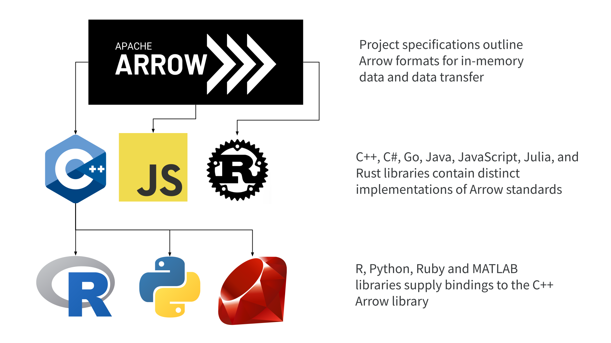

# download a copy of this repository
usethis::create_from_github(
repo_spec = "djnavarro/arrow-user2022",
destdir="<your chosen path>"
)
# install the package dependencies
remotes::install_deps()
# manually download and unzip the "tiny taxi" data
download.file(
url = "https://github.com/djnavarro/arrow-user2022/releases/download/v0.1/nyc-taxi-tiny.zip",
destfile = here::here("data/nyc-taxi-tiny.zip")
)
unzip(
zipfile = here::here("data/nyc-taxi-tiny.zip"),
exdir = here::here("data")
)Larger-Than-Memory Data Workflows with Apache Arrow
Danielle Navarro, Jonathan Keane, Stephanie Hazlitt
Housekeeping
- Written tutorial, data sets, exercises
- Website: arrow-user2022.netlify.app
- GitHub: github.com/djnavarro/arrow-user2022
- Instructors:
- Danielle Navarro
- Jonathan Keane
- Stephanie Hazlitt
Structure
- Hello Arrow
- Data Wrangling
- Data Storage
- Advanced Arrow
Oh no, I haven’t installed anything!
Just loading some R packages…
Hello Arrow
Section 1: In which we dive straight into Arrow
Opening a data set
FileSystemDataset with 158 Parquet files
vendor_name: string
pickup_datetime: timestamp[ms]
dropoff_datetime: timestamp[ms]
passenger_count: int64
trip_distance: double
pickup_longitude: double
pickup_latitude: double
rate_code: string
store_and_fwd: string
dropoff_longitude: double
dropoff_latitude: double
payment_type: string
fare_amount: double
extra: double
mta_tax: double
tip_amount: double
tolls_amount: double
total_amount: double
improvement_surcharge: double
congestion_surcharge: double
pickup_location_id: int64
dropoff_location_id: int64
year: int32
month: int32NYC taxi data: nrow()
NYC taxi data: head()
# A tibble: 6 × 24
vendor_name pickup_datetime dropoff_datetime passenger_count
<chr> <dttm> <dttm> <int>
1 VTS 2009-01-04 13:52:00 2009-01-04 14:02:00 1
2 VTS 2009-01-04 14:31:00 2009-01-04 14:38:00 3
3 VTS 2009-01-04 02:43:00 2009-01-04 02:57:00 5
4 DDS 2009-01-02 07:52:58 2009-01-02 08:14:00 1
5 DDS 2009-01-25 03:18:23 2009-01-25 03:24:56 1
6 DDS 2009-01-17 09:35:59 2009-01-17 09:43:35 2
# … with 20 more variables: trip_distance <dbl>, pickup_longitude <dbl>,
# pickup_latitude <dbl>, rate_code <chr>, store_and_fwd <chr>,
# dropoff_longitude <dbl>, dropoff_latitude <dbl>, payment_type <chr>,
# fare_amount <dbl>, extra <dbl>, mta_tax <dbl>, tip_amount <dbl>,
# tolls_amount <dbl>, total_amount <dbl>, improvement_surcharge <dbl>,
# congestion_surcharge <dbl>, pickup_location_id <int>,
# dropoff_location_id <int>, year <int>, month <int>NYC taxi data: dplyr pipeline
- use
filter()to restrict data to 2017:2021 - use
group_by()to aggregate byyear - use
summarize()to count total and shared trips - use
mutate()to compute percent of trips shared - use
collect()to trigger execution
NYC taxi data: dplyr pipeline
nyc_taxi |>
filter(year %in% 2017:2021) |>
group_by(year) |>
summarize(
all_trips = n(),
shared_trips = sum(passenger_count > 1, na.rm = TRUE)
) |>
mutate(pct_shared = shared_trips / all_trips * 100) |>
collect()# A tibble: 5 × 4
year all_trips shared_trips pct_shared
<int> <int> <int> <dbl>
1 2017 113495512 32296166 28.5
2 2018 102797401 28796633 28.0
3 2019 84393604 23515989 27.9
4 2020 24647055 5837960 23.7
5 2021 30902618 7221844 23.4Exercises
- Calculate total number of rides for each month in 2019
- For each month in 2019, find the distance travelled by the longest recorded taxi ride that month. Sort the results in month order
What is Arrow?
Section 2: In which we ask “why do we care?”
What is Arrow?
A multi-language toolbox
for accelerated data interchange
and in-memory processing
A multi-language toolbox
Accelerated data interchange
Accelerated data interchange
Efficient in-memory processing
Efficient in-memory processing
Efficient in-memory processing
The {arrow} package
Section 3: In which we unpack some things
The {arrow} package
- Read/write functionality
- Data wrangling functionality
Read/write
Data wrangling

Data wrangling with Arrow
Section 4: In which we explore one-table computations
One-table dplyr verbs: queries
One-table dplyr verbs: collect()
Mutating multiple columns, manually
millions <- function(x) x / 10^6
shared_rides |>
mutate(
all_trips = millions(all_trips),
shared_trips = millions(shared_trips)
) |>
collect()# A tibble: 5 × 4
year all_trips shared_trips pct_shared
<int> <dbl> <dbl> <dbl>
1 2017 113. 32.3 28.5
2 2018 103. 28.8 28.0
3 2019 84.4 23.5 27.9
4 2020 24.6 5.84 23.7
5 2021 30.9 7.22 23.4Arrow does not understand scoped verbs
Arrow does not understand across()
Do across() after collect()
String edits
Section 5: In which {arrow} translates {stringr} code
NYC taxi zones table
# A tibble: 265 × 4
location_id borough zone service_zone
<int> <chr> <chr> <chr>
1 1 EWR Newark Airport EWR
2 2 Queens Jamaica Bay Boro Zone
3 3 Bronx Allerton/Pelham Gardens Boro Zone
4 4 Manhattan Alphabet City Yellow Zone
5 5 Staten Island Arden Heights Boro Zone
6 6 Staten Island Arrochar/Fort Wadsworth Boro Zone
7 7 Queens Astoria Boro Zone
8 8 Queens Astoria Park Boro Zone
9 9 Queens Auburndale Boro Zone
10 10 Queens Baisley Park Boro Zone
# … with 255 more rowsNYC taxi zones as an Arrow Table
Table columns are (Chunked) Arrays
ChunkedArray
[
[
"Newark Airport",
"Jamaica Bay",
"Allerton/Pelham Gardens",
"Alphabet City",
"Arden Heights",
"Arrochar/Fort Wadsworth",
"Astoria",
"Astoria Park",
"Auburndale",
"Baisley Park",
...
"Williamsburg (South Side)",
"Windsor Terrace",
"Woodhaven",
"Woodlawn/Wakefield",
"Woodside",
"World Trade Center",
"Yorkville East",
"Yorkville West",
"NV",
null
]
]Tracking the data
String manipulation exercise
- Remove vowels and all text after
/ - Count length of abbreviated strings
- Arrange by descending string length
String manipulation exercise
- why use two
mutate()calls? - why use
str_replace_all()and notstr_remove_all()
String manipulation exercise
# A tibble: 265 × 3
zone abbr_zone abbr_zone_len
<chr> <chr> <int>
1 Prospect-Lefferts Gardens Prspct-LffrtsGrdns 18
2 Flushing Meadows-Corona Park FlshngMdws-CrnPrk 17
3 Springfield Gardens North SprngfldGrdnsNrth 17
4 Springfield Gardens South SprngfldGrdnsSth 16
5 Washington Heights North WshngtnHghtsNrth 16
6 Williamsburg (North Side) Wllmsbrg(NrthSd) 16
7 Financial District North FnnclDstrctNrth 15
8 Washington Heights South WshngtnHghtsSth 15
9 Williamsburg (South Side) Wllmsbrg(SthSd) 15
10 Financial District South FnnclDstrctSth 14
# … with 255 more rowsDates and times
Section 6: In which {arrow} translates {lubridate} code
Pickup at pi time
pi_time_pickups <- nyc_taxi |>
filter(year == 2022, month == 1) |>
mutate(
day = day(pickup_datetime),
weekday = wday(pickup_datetime, label = TRUE),
hour = hour(pickup_datetime),
minute = minute(pickup_datetime),
second = second(pickup_datetime)
) |>
filter(hour == 3, minute == 14, second == 15) |>
select(pickup_datetime, year, month, day, weekday)Pickup at pi time
# A tibble: 5 × 5
pickup_datetime year month day weekday
<dttm> <int> <int> <int> <chr>
1 2022-01-01 14:14:15 2022 1 1 Sat
2 2022-01-01 14:14:15 2022 1 1 Sat
3 2022-01-01 14:14:15 2022 1 1 Sat
4 2022-01-09 14:14:15 2022 1 9 Sun
5 2022-01-18 14:14:15 2022 1 18 Tue The output is correct: hour == 3 refers to time stored in UTC, but the R print method is displays output in my local time (UTC+11)
Database joins
Section 7: In which we explore two-table joins and encounter some potential traps for the unwary
Penguin data
# A tibble: 344 × 8
species island bill_length_mm bill_depth_mm flipper_length_mm body_mass_g
<fct> <fct> <dbl> <dbl> <int> <int>
1 Adelie Torgersen 39.1 18.7 181 3750
2 Adelie Torgersen 39.5 17.4 186 3800
3 Adelie Torgersen 40.3 18 195 3250
4 Adelie Torgersen NA NA NA NA
5 Adelie Torgersen 36.7 19.3 193 3450
6 Adelie Torgersen 39.3 20.6 190 3650
7 Adelie Torgersen 38.9 17.8 181 3625
8 Adelie Torgersen 39.2 19.6 195 4675
9 Adelie Torgersen 34.1 18.1 193 3475
10 Adelie Torgersen 42 20.2 190 4250
# … with 334 more rows, and 2 more variables: sex <fct>, year <int>Penguin data: An auxiliary table
Left joining penguins and location
Left joining works as expected
penguins |>
arrow_table() |>
left_join(location) |>
select(species, island, bill_length_mm, lon, lat) |>
collect()# A tibble: 344 × 5
species island bill_length_mm lon lat
<fct> <fct> <dbl> <dbl> <dbl>
1 Adelie Torgersen 39.1 -64.8 -64.1
2 Adelie Torgersen 39.5 -64.8 -64.1
3 Adelie Torgersen 40.3 -64.8 -64.1
4 Adelie Torgersen NA -64.8 -64.1
5 Adelie Torgersen 36.7 -64.8 -64.1
6 Adelie Torgersen 39.3 -64.8 -64.1
7 Adelie Torgersen 38.9 -64.8 -64.1
8 Adelie Torgersen 39.2 -64.8 -64.1
9 Adelie Torgersen 34.1 -64.8 -64.1
10 Adelie Torgersen 42 -64.8 -64.1
# … with 334 more rowsTraps for the unwary…

Traps for the unwary…
pickup <- nyc_taxi_zones |>
select(
pickup_location_id = location_id,
pickup_borough = borough
)
pickup# A tibble: 265 × 2
pickup_location_id pickup_borough
<int> <chr>
1 1 EWR
2 2 Queens
3 3 Bronx
4 4 Manhattan
5 5 Staten Island
6 6 Staten Island
7 7 Queens
8 8 Queens
9 9 Queens
10 10 Queens
# … with 255 more rowsTraps for the unwary…
Why didn’t this work?
Schema
vendor_name: string
pickup_datetime: timestamp[ms]
dropoff_datetime: timestamp[ms]
passenger_count: int64
trip_distance: double
pickup_longitude: double
pickup_latitude: double
rate_code: string
store_and_fwd: string
dropoff_longitude: double
dropoff_latitude: double
payment_type: string
fare_amount: double
extra: double
mta_tax: double
tip_amount: double
tolls_amount: double
total_amount: double
improvement_surcharge: double
congestion_surcharge: double
pickup_location_id: int64
dropoff_location_id: int64
year: int32
month: int32Why didn’t this work?
Controlling the schema
Fixing the query
Fixing the query
Fixing the query
# A tibble: 50 × 3
pickup_borough dropoff_borough n
<chr> <chr> <int>
1 <NA> <NA> 1249152360
2 Manhattan Manhattan 355850092
3 Queens Manhattan 14648891
4 Manhattan Queens 13186443
5 Manhattan Brooklyn 11294128
6 Queens Queens 7537042
7 Unknown Unknown 4519763
8 Queens Brooklyn 3727686
9 Brooklyn Brooklyn 3566671
10 Manhattan Bronx 2091627
# … with 40 more rowsExercise
How many taxi pickups were recorded in 2019 from the three major airports covered by the NYC Taxis data set (JFK, LaGuardia, Newark)?
Using DuckDB
Section 8: In which {arrow} and {duckdb} play nicely
A difficulty in {arrow}
An easy fix with {duckdb}
penguins |>
arrow_table() |>
to_duckdb() |>
mutate(id = row_number()) |>
filter(is.na(sex)) |>
select(id, sex, species, island)# Source: lazy query [?? x 4]
# Database: DuckDB 0.3.4 [danielle@Linux 5.13.0-51-generic:R 4.2.0/:memory:]
id sex species island
<dbl> <chr> <chr> <chr>
1 4 <NA> Adelie Torgersen
2 9 <NA> Adelie Torgersen
3 10 <NA> Adelie Torgersen
4 11 <NA> Adelie Torgersen
5 12 <NA> Adelie Torgersen
6 48 <NA> Adelie Dream
7 179 <NA> Gentoo Biscoe
8 219 <NA> Gentoo Biscoe
9 257 <NA> Gentoo Biscoe
10 269 <NA> Gentoo Biscoe
# … with more rowsNumerology example
tic()
nyc_taxi_jan <- open_dataset("~/Datasets/nyc-taxi/year=2022/month=1/")
numerology <- nyc_taxi_jan |>
to_duckdb() |>
window_order(pickup_datetime) |>
mutate(trip_id = row_number()) |>
filter(
trip_id |> as.character() |> str_detect("59"),
second(pickup_datetime) == 59,
minute(pickup_datetime) == 59
) |>
mutate(
magic_number = trip_id |>
as.character() |>
str_remove_all("[^59]") |>
as.integer()
) |>
select(trip_id, magic_number, pickup_datetime) |>
collect()
toc()0.542 sec elapsedNumerology example
# A tibble: 37 × 3
trip_id magic_number pickup_datetime
<dbl> <int> <dttm>
1 13159 59 2022-01-01 02:59:59
2 39159 959 2022-01-01 15:59:59
3 65940 59 2022-01-02 01:59:59
4 159315 595 2022-01-03 14:59:59
5 405954 595 2022-01-06 18:59:59
6 405955 5955 2022-01-06 18:59:59
7 487592 59 2022-01-07 21:59:59
8 590708 59 2022-01-09 07:59:59
9 590709 599 2022-01-09 07:59:59
10 590710 59 2022-01-09 07:59:59
# … with 27 more rowsBig data file formats
Section 9: In which we talk about parquet files
Big data file formats
Parquet files are “row chunked”

Parquet files are “row chunked, column-arranged, and paged”
Parquet file organization
Reading parquet files
parquet_file <- "~/Datasets/nyc-taxi/year=2019/month=9/part-0.parquet"
nyc_taxi_2019_09 <- read_parquet(parquet_file)
nyc_taxi_2019_09# A tibble: 6,567,396 × 22
vendor_name pickup_datetime dropoff_datetime passenger_count
<chr> <dttm> <dttm> <int>
1 VTS 2019-09-01 15:14:09 2019-09-01 15:31:52 2
2 VTS 2019-09-01 15:36:17 2019-09-01 16:12:44 1
3 VTS 2019-09-01 15:29:19 2019-09-01 15:54:13 1
4 CMT 2019-09-01 15:33:09 2019-09-01 15:52:14 2
5 VTS 2019-09-01 15:57:43 2019-09-01 16:26:21 1
6 CMT 2019-09-01 15:59:16 2019-09-01 16:28:12 1
7 CMT 2019-09-01 15:20:06 2019-09-01 15:52:19 1
8 CMT 2019-09-01 15:27:54 2019-09-01 15:32:56 0
9 CMT 2019-09-01 15:35:08 2019-09-01 15:55:51 0
10 CMT 2019-09-01 15:19:37 2019-09-01 15:30:52 1
# … with 6,567,386 more rows, and 18 more variables: trip_distance <dbl>,
# pickup_longitude <dbl>, pickup_latitude <dbl>, rate_code <chr>,
# store_and_fwd <chr>, dropoff_longitude <dbl>, dropoff_latitude <dbl>,
# payment_type <chr>, fare_amount <dbl>, extra <dbl>, mta_tax <dbl>,
# tip_amount <dbl>, tolls_amount <dbl>, total_amount <dbl>,
# improvement_surcharge <dbl>, congestion_surcharge <dbl>,
# pickup_location_id <int>, dropoff_location_id <int>Reading parquet files
# A tibble: 6,567,396 × 4
pickup_datetime pickup_longitude pickup_latitude pickup_location_id
<dttm> <dbl> <dbl> <int>
1 2019-09-01 15:14:09 NA NA 186
2 2019-09-01 15:36:17 NA NA 138
3 2019-09-01 15:29:19 NA NA 132
4 2019-09-01 15:33:09 NA NA 79
5 2019-09-01 15:57:43 NA NA 132
6 2019-09-01 15:59:16 NA NA 132
7 2019-09-01 15:20:06 NA NA 132
8 2019-09-01 15:27:54 NA NA 224
9 2019-09-01 15:35:08 NA NA 79
10 2019-09-01 15:19:37 NA NA 97
# … with 6,567,386 more rowsSelective reads are faster
Multi-file datasets
Section 10: In which we talk about partitioning
NYC taxi data files
[1] "/home/danielle/Datasets/nyc-taxi/year=2009/month=1/part-0.parquet"
[2] "/home/danielle/Datasets/nyc-taxi/year=2009/month=10/part-0.parquet"
[3] "/home/danielle/Datasets/nyc-taxi/year=2009/month=11/part-0.parquet"
[4] "/home/danielle/Datasets/nyc-taxi/year=2009/month=12/part-0.parquet"
[5] "/home/danielle/Datasets/nyc-taxi/year=2009/month=2/part-0.parquet"
[6] "/home/danielle/Datasets/nyc-taxi/year=2009/month=3/part-0.parquet"
[7] "/home/danielle/Datasets/nyc-taxi/year=2009/month=4/part-0.parquet"
[8] "/home/danielle/Datasets/nyc-taxi/year=2009/month=5/part-0.parquet"
[9] "/home/danielle/Datasets/nyc-taxi/year=2009/month=6/part-0.parquet"
[10] "/home/danielle/Datasets/nyc-taxi/year=2009/month=7/part-0.parquet"
[11] "/home/danielle/Datasets/nyc-taxi/year=2009/month=8/part-0.parquet"
[12] "/home/danielle/Datasets/nyc-taxi/year=2009/month=9/part-0.parquet"
[13] "/home/danielle/Datasets/nyc-taxi/year=2010/month=1/part-0.parquet"
[14] "/home/danielle/Datasets/nyc-taxi/year=2010/month=10/part-0.parquet"
[15] "/home/danielle/Datasets/nyc-taxi/year=2010/month=11/part-0.parquet"
[16] "/home/danielle/Datasets/nyc-taxi/year=2010/month=12/part-0.parquet"
[17] "/home/danielle/Datasets/nyc-taxi/year=2010/month=2/part-0.parquet"
[18] "/home/danielle/Datasets/nyc-taxi/year=2010/month=3/part-0.parquet"
[19] "/home/danielle/Datasets/nyc-taxi/year=2010/month=4/part-0.parquet"
[20] "/home/danielle/Datasets/nyc-taxi/year=2010/month=5/part-0.parquet"
[21] "/home/danielle/Datasets/nyc-taxi/year=2010/month=6/part-0.parquet"
[22] "/home/danielle/Datasets/nyc-taxi/year=2010/month=7/part-0.parquet"
[23] "/home/danielle/Datasets/nyc-taxi/year=2010/month=8/part-0.parquet"
[24] "/home/danielle/Datasets/nyc-taxi/year=2010/month=9/part-0.parquet"
[25] "/home/danielle/Datasets/nyc-taxi/year=2011/month=1/part-0.parquet"
[26] "/home/danielle/Datasets/nyc-taxi/year=2011/month=10/part-0.parquet"
[27] "/home/danielle/Datasets/nyc-taxi/year=2011/month=11/part-0.parquet"
[28] "/home/danielle/Datasets/nyc-taxi/year=2011/month=12/part-0.parquet"
[29] "/home/danielle/Datasets/nyc-taxi/year=2011/month=2/part-0.parquet"
[30] "/home/danielle/Datasets/nyc-taxi/year=2011/month=3/part-0.parquet"
[31] "/home/danielle/Datasets/nyc-taxi/year=2011/month=4/part-0.parquet"
[32] "/home/danielle/Datasets/nyc-taxi/year=2011/month=5/part-0.parquet"
[33] "/home/danielle/Datasets/nyc-taxi/year=2011/month=6/part-0.parquet"
[34] "/home/danielle/Datasets/nyc-taxi/year=2011/month=7/part-0.parquet"
[35] "/home/danielle/Datasets/nyc-taxi/year=2011/month=8/part-0.parquet"
[36] "/home/danielle/Datasets/nyc-taxi/year=2011/month=9/part-0.parquet"
[37] "/home/danielle/Datasets/nyc-taxi/year=2012/month=1/part-0.parquet"
[38] "/home/danielle/Datasets/nyc-taxi/year=2012/month=10/part-0.parquet"
[39] "/home/danielle/Datasets/nyc-taxi/year=2012/month=11/part-0.parquet"
[40] "/home/danielle/Datasets/nyc-taxi/year=2012/month=12/part-0.parquet"
[41] "/home/danielle/Datasets/nyc-taxi/year=2012/month=2/part-0.parquet"
[42] "/home/danielle/Datasets/nyc-taxi/year=2012/month=3/part-0.parquet"
[43] "/home/danielle/Datasets/nyc-taxi/year=2012/month=4/part-0.parquet"
[44] "/home/danielle/Datasets/nyc-taxi/year=2012/month=5/part-0.parquet"
[45] "/home/danielle/Datasets/nyc-taxi/year=2012/month=6/part-0.parquet"
[46] "/home/danielle/Datasets/nyc-taxi/year=2012/month=7/part-0.parquet"
[47] "/home/danielle/Datasets/nyc-taxi/year=2012/month=8/part-0.parquet"
[48] "/home/danielle/Datasets/nyc-taxi/year=2012/month=9/part-0.parquet"
[49] "/home/danielle/Datasets/nyc-taxi/year=2013/month=1/part-0.parquet"
[50] "/home/danielle/Datasets/nyc-taxi/year=2013/month=10/part-0.parquet"
[51] "/home/danielle/Datasets/nyc-taxi/year=2013/month=11/part-0.parquet"
[52] "/home/danielle/Datasets/nyc-taxi/year=2013/month=12/part-0.parquet"
[53] "/home/danielle/Datasets/nyc-taxi/year=2013/month=2/part-0.parquet"
[54] "/home/danielle/Datasets/nyc-taxi/year=2013/month=3/part-0.parquet"
[55] "/home/danielle/Datasets/nyc-taxi/year=2013/month=4/part-0.parquet"
[56] "/home/danielle/Datasets/nyc-taxi/year=2013/month=5/part-0.parquet"
[57] "/home/danielle/Datasets/nyc-taxi/year=2013/month=6/part-0.parquet"
[58] "/home/danielle/Datasets/nyc-taxi/year=2013/month=7/part-0.parquet"
[59] "/home/danielle/Datasets/nyc-taxi/year=2013/month=8/part-0.parquet"
[60] "/home/danielle/Datasets/nyc-taxi/year=2013/month=9/part-0.parquet"
[61] "/home/danielle/Datasets/nyc-taxi/year=2014/month=1/part-0.parquet"
[62] "/home/danielle/Datasets/nyc-taxi/year=2014/month=10/part-0.parquet"
[63] "/home/danielle/Datasets/nyc-taxi/year=2014/month=11/part-0.parquet"
[64] "/home/danielle/Datasets/nyc-taxi/year=2014/month=12/part-0.parquet"
[65] "/home/danielle/Datasets/nyc-taxi/year=2014/month=2/part-0.parquet"
[66] "/home/danielle/Datasets/nyc-taxi/year=2014/month=3/part-0.parquet"
[67] "/home/danielle/Datasets/nyc-taxi/year=2014/month=4/part-0.parquet"
[68] "/home/danielle/Datasets/nyc-taxi/year=2014/month=5/part-0.parquet"
[69] "/home/danielle/Datasets/nyc-taxi/year=2014/month=6/part-0.parquet"
[70] "/home/danielle/Datasets/nyc-taxi/year=2014/month=7/part-0.parquet"
[71] "/home/danielle/Datasets/nyc-taxi/year=2014/month=8/part-0.parquet"
[72] "/home/danielle/Datasets/nyc-taxi/year=2014/month=9/part-0.parquet"
[73] "/home/danielle/Datasets/nyc-taxi/year=2015/month=1/part-0.parquet"
[74] "/home/danielle/Datasets/nyc-taxi/year=2015/month=10/part-0.parquet"
[75] "/home/danielle/Datasets/nyc-taxi/year=2015/month=11/part-0.parquet"
[76] "/home/danielle/Datasets/nyc-taxi/year=2015/month=12/part-0.parquet"
[77] "/home/danielle/Datasets/nyc-taxi/year=2015/month=2/part-0.parquet"
[78] "/home/danielle/Datasets/nyc-taxi/year=2015/month=3/part-0.parquet"
[79] "/home/danielle/Datasets/nyc-taxi/year=2015/month=4/part-0.parquet"
[80] "/home/danielle/Datasets/nyc-taxi/year=2015/month=5/part-0.parquet"
[81] "/home/danielle/Datasets/nyc-taxi/year=2015/month=6/part-0.parquet"
[82] "/home/danielle/Datasets/nyc-taxi/year=2015/month=7/part-0.parquet"
[83] "/home/danielle/Datasets/nyc-taxi/year=2015/month=8/part-0.parquet"
[84] "/home/danielle/Datasets/nyc-taxi/year=2015/month=9/part-0.parquet"
[85] "/home/danielle/Datasets/nyc-taxi/year=2016/month=1/part-0.parquet"
[86] "/home/danielle/Datasets/nyc-taxi/year=2016/month=10/part-0.parquet"
[87] "/home/danielle/Datasets/nyc-taxi/year=2016/month=11/part-0.parquet"
[88] "/home/danielle/Datasets/nyc-taxi/year=2016/month=12/part-0.parquet"
[89] "/home/danielle/Datasets/nyc-taxi/year=2016/month=2/part-0.parquet"
[90] "/home/danielle/Datasets/nyc-taxi/year=2016/month=3/part-0.parquet"
[91] "/home/danielle/Datasets/nyc-taxi/year=2016/month=4/part-0.parquet"
[92] "/home/danielle/Datasets/nyc-taxi/year=2016/month=5/part-0.parquet"
[93] "/home/danielle/Datasets/nyc-taxi/year=2016/month=6/part-0.parquet"
[94] "/home/danielle/Datasets/nyc-taxi/year=2016/month=7/part-0.parquet"
[95] "/home/danielle/Datasets/nyc-taxi/year=2016/month=8/part-0.parquet"
[96] "/home/danielle/Datasets/nyc-taxi/year=2016/month=9/part-0.parquet"
[97] "/home/danielle/Datasets/nyc-taxi/year=2017/month=1/part-0.parquet"
[98] "/home/danielle/Datasets/nyc-taxi/year=2017/month=10/part-0.parquet"
[99] "/home/danielle/Datasets/nyc-taxi/year=2017/month=11/part-0.parquet"
[100] "/home/danielle/Datasets/nyc-taxi/year=2017/month=12/part-0.parquet"
[101] "/home/danielle/Datasets/nyc-taxi/year=2017/month=2/part-0.parquet"
[102] "/home/danielle/Datasets/nyc-taxi/year=2017/month=3/part-0.parquet"
[103] "/home/danielle/Datasets/nyc-taxi/year=2017/month=4/part-0.parquet"
[104] "/home/danielle/Datasets/nyc-taxi/year=2017/month=5/part-0.parquet"
[105] "/home/danielle/Datasets/nyc-taxi/year=2017/month=6/part-0.parquet"
[106] "/home/danielle/Datasets/nyc-taxi/year=2017/month=7/part-0.parquet"
[107] "/home/danielle/Datasets/nyc-taxi/year=2017/month=8/part-0.parquet"
[108] "/home/danielle/Datasets/nyc-taxi/year=2017/month=9/part-0.parquet"
[109] "/home/danielle/Datasets/nyc-taxi/year=2018/month=1/part-0.parquet"
[110] "/home/danielle/Datasets/nyc-taxi/year=2018/month=10/part-0.parquet"
[111] "/home/danielle/Datasets/nyc-taxi/year=2018/month=11/part-0.parquet"
[112] "/home/danielle/Datasets/nyc-taxi/year=2018/month=12/part-0.parquet"
[113] "/home/danielle/Datasets/nyc-taxi/year=2018/month=2/part-0.parquet"
[114] "/home/danielle/Datasets/nyc-taxi/year=2018/month=3/part-0.parquet"
[115] "/home/danielle/Datasets/nyc-taxi/year=2018/month=4/part-0.parquet"
[116] "/home/danielle/Datasets/nyc-taxi/year=2018/month=5/part-0.parquet"
[117] "/home/danielle/Datasets/nyc-taxi/year=2018/month=6/part-0.parquet"
[118] "/home/danielle/Datasets/nyc-taxi/year=2018/month=7/part-0.parquet"
[119] "/home/danielle/Datasets/nyc-taxi/year=2018/month=8/part-0.parquet"
[120] "/home/danielle/Datasets/nyc-taxi/year=2018/month=9/part-0.parquet"
[121] "/home/danielle/Datasets/nyc-taxi/year=2019/month=1/part-0.parquet"
[122] "/home/danielle/Datasets/nyc-taxi/year=2019/month=10/part-0.parquet"
[123] "/home/danielle/Datasets/nyc-taxi/year=2019/month=11/part-0.parquet"
[124] "/home/danielle/Datasets/nyc-taxi/year=2019/month=12/part-0.parquet"
[125] "/home/danielle/Datasets/nyc-taxi/year=2019/month=2/part-0.parquet"
[126] "/home/danielle/Datasets/nyc-taxi/year=2019/month=3/part-0.parquet"
[127] "/home/danielle/Datasets/nyc-taxi/year=2019/month=4/part-0.parquet"
[128] "/home/danielle/Datasets/nyc-taxi/year=2019/month=5/part-0.parquet"
[129] "/home/danielle/Datasets/nyc-taxi/year=2019/month=6/part-0.parquet"
[130] "/home/danielle/Datasets/nyc-taxi/year=2019/month=7/part-0.parquet"
[131] "/home/danielle/Datasets/nyc-taxi/year=2019/month=8/part-0.parquet"
[132] "/home/danielle/Datasets/nyc-taxi/year=2019/month=9/part-0.parquet"
[133] "/home/danielle/Datasets/nyc-taxi/year=2020/month=1/part-0.parquet"
[134] "/home/danielle/Datasets/nyc-taxi/year=2020/month=10/part-0.parquet"
[135] "/home/danielle/Datasets/nyc-taxi/year=2020/month=11/part-0.parquet"
[136] "/home/danielle/Datasets/nyc-taxi/year=2020/month=12/part-0.parquet"
[137] "/home/danielle/Datasets/nyc-taxi/year=2020/month=2/part-0.parquet"
[138] "/home/danielle/Datasets/nyc-taxi/year=2020/month=3/part-0.parquet"
[139] "/home/danielle/Datasets/nyc-taxi/year=2020/month=4/part-0.parquet"
[140] "/home/danielle/Datasets/nyc-taxi/year=2020/month=5/part-0.parquet"
[141] "/home/danielle/Datasets/nyc-taxi/year=2020/month=6/part-0.parquet"
[142] "/home/danielle/Datasets/nyc-taxi/year=2020/month=7/part-0.parquet"
[143] "/home/danielle/Datasets/nyc-taxi/year=2020/month=8/part-0.parquet"
[144] "/home/danielle/Datasets/nyc-taxi/year=2020/month=9/part-0.parquet"
[145] "/home/danielle/Datasets/nyc-taxi/year=2021/month=1/part-0.parquet"
[146] "/home/danielle/Datasets/nyc-taxi/year=2021/month=10/part-0.parquet"
[147] "/home/danielle/Datasets/nyc-taxi/year=2021/month=11/part-0.parquet"
[148] "/home/danielle/Datasets/nyc-taxi/year=2021/month=12/part-0.parquet"
[149] "/home/danielle/Datasets/nyc-taxi/year=2021/month=2/part-0.parquet"
[150] "/home/danielle/Datasets/nyc-taxi/year=2021/month=3/part-0.parquet"
[151] "/home/danielle/Datasets/nyc-taxi/year=2021/month=4/part-0.parquet"
[152] "/home/danielle/Datasets/nyc-taxi/year=2021/month=5/part-0.parquet"
[153] "/home/danielle/Datasets/nyc-taxi/year=2021/month=6/part-0.parquet"
[154] "/home/danielle/Datasets/nyc-taxi/year=2021/month=7/part-0.parquet"
[155] "/home/danielle/Datasets/nyc-taxi/year=2021/month=8/part-0.parquet"
[156] "/home/danielle/Datasets/nyc-taxi/year=2021/month=9/part-0.parquet"
[157] "/home/danielle/Datasets/nyc-taxi/year=2022/month=1/part-0.parquet"
[158] "/home/danielle/Datasets/nyc-taxi/year=2022/month=2/part-0.parquet" Partition structure matters
Writing datasets
Advanced Arrow
Section 11: In which we talk about data structures
Data frames in R
Arrow record batches
Arrow tables
Arrow scalars
Arrow arrays
Arrow arrays
Arrow arrays
Chunked arrays
Chunked arrays
Chunked arrays
Chunked arrays
Tables are collections of chunked arrays
riots <- arrow_table(
location = chunked_array(
c("Stonewall Inn", "Compton's Cafeteria", "Cooper Do-nuts", "Dewey's"),
c("King's Cross", "La Rambla")
),
year = chunked_array(
c(1969, 1966, 1959, 1965),
c(1978, 1977)
),
city = chunked_array(
c("New York", "San Francisco", "Los Angeles", "Philadelphia"),
c("Sydney", "Barcelona")
)
)
riotsTable
6 rows x 3 columns
$location <string>
$year <double>
$city <string>Tables are collections of chunked arrays
Pulling into R
Mapping scalar types
Section 12: In which the devil is in the detail
Mapping scalar types
Mapping scalar types
Mapping scalar types
Wrapping up
Section 13: In which we consider the big picture
Some things really need Arrow
nyc_taxi_zones <- "data/taxi_zone_lookup.csv" |>
read_csv_arrow(
as_data_frame = FALSE,
skip = 1,
schema = schema(
LocationID = int64(),
Borough = utf8(),
Zone = utf8(),
service_zone = utf8()
)
) |>
rename(
location_id = LocationID,
borough = Borough,
zone = Zone,
service_zone = service_zone
)
airport_zones <- nyc_taxi_zones |>
filter(str_detect(zone, "Airport")) |>
pull(location_id)
dropoff_zones <- nyc_taxi_zones |>
select(
dropoff_location_id = location_id,
dropoff_zone = zone
)
airport_pickups <- nyc_taxi |>
filter(pickup_location_id %in% airport_zones) |>
select(
matches("datetime"),
matches("location_id")
) |>
left_join(dropoff_zones) |>
count(dropoff_zone) |>
arrange(desc(n)) |>
collect()Other things really need R
dat <- "data/taxi_zones/taxi_zones.shp" |>
read_sf() |>
clean_names() |>
left_join(airport_pickups,
by = c("zone" = "dropoff_zone")) |>
arrange(desc(n))
the_big_picture <- dat |>
ggplot(aes(fill = n)) +
geom_sf(size = .1, color = "#222222") +
scale_fill_distiller(
name = "Number of trips",
labels = label_comma(),
palette = "Oranges",
direction = 1
) +
geom_label_repel(
stat = "sf_coordinates",
data = dat |>
mutate(zone = case_when(
str_detect(zone, "Airport") ~ zone,
str_detect(zone, "Times") ~ zone,
TRUE ~ "")
),
mapping = aes(label = zone, geometry = geometry),
max.overlaps = 50,
box.padding = .5,
label.padding = .5,
label.size = .15,
label.r = 0,
force = 30,
force_pull = 0,
fill = "white",
min.segment.length = 0
) +
theme_void() +
theme(
text = element_text(colour = "black"),
plot.background = element_rect(colour = NA, fill = "#839496"),
legend.background = element_rect(fill = "white"),
legend.margin = margin(10, 10, 10, 10)
)